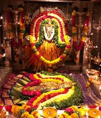
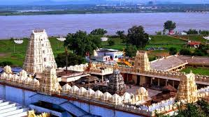
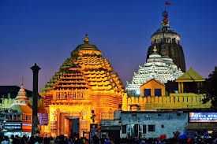
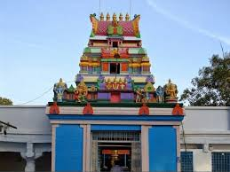

ALAMPUR JOGULAMBA
ANANTHA PADMANABHA SWAMY
Somasila is a temple town in Telangana that has recently been developed as an eco-tourism project. Well-known for its 7th Century Lalitha Someswara Swamy Temple, the village is home to 15 Shiva temples. Home to a number of temples dedicated to Lord Shiva, the Krishna River as well as natural beauty,...

BALKAMPET YELLAMMA
BASARA

BHADRACHALAM

BIRLA MANDIR

JAGANNATH TEMPLE
